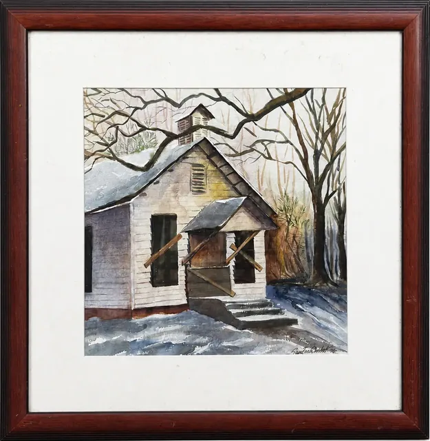
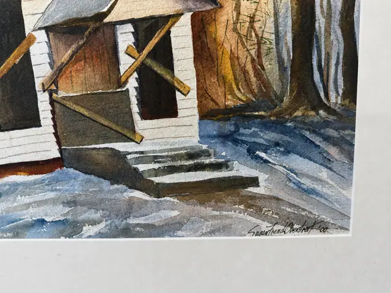
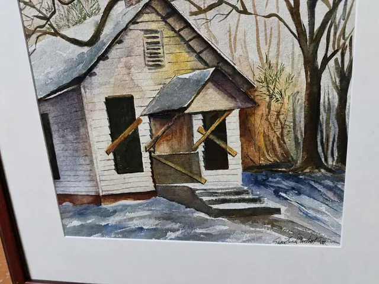
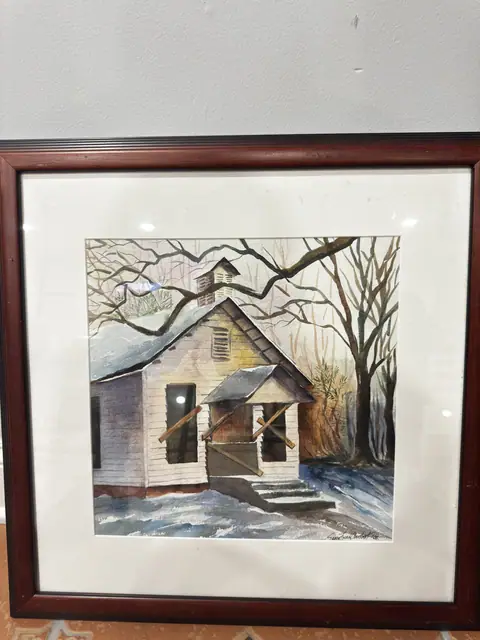
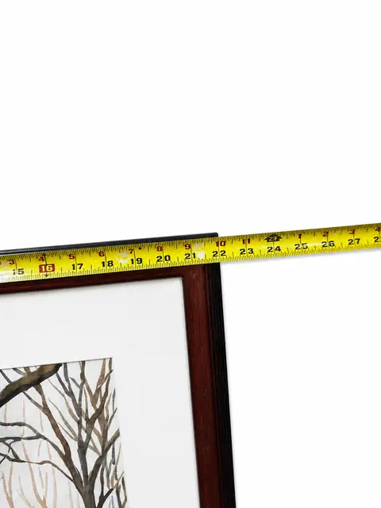
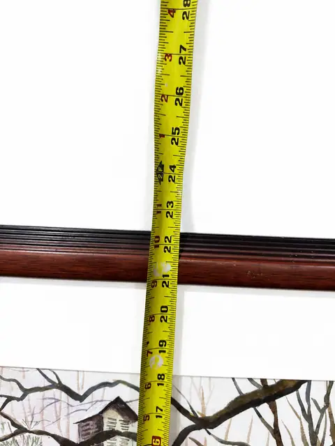
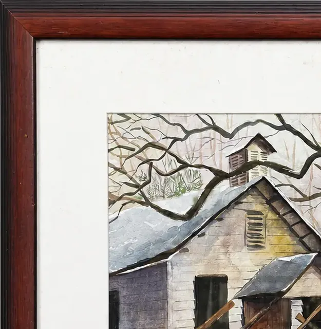

Paintings & Prints
Watercolour of a Snow-Covered Cabin, Signed, Burgundy Frame
Price Upon Request









About the Item
Winter scene of a timber cabin among bare trees. Watercolour on paper, signed lower right. Presented with a wide white mat in a burgundy wood frame under glass.
Details
- Dimensions:
- Height: 22.5 in (57.15 cm)
Width: 22.0 in (55.88 cm)
outside of frame - Condition:
- Offered in the condition shown in the photographs.
- Reference Number:
- VO-38